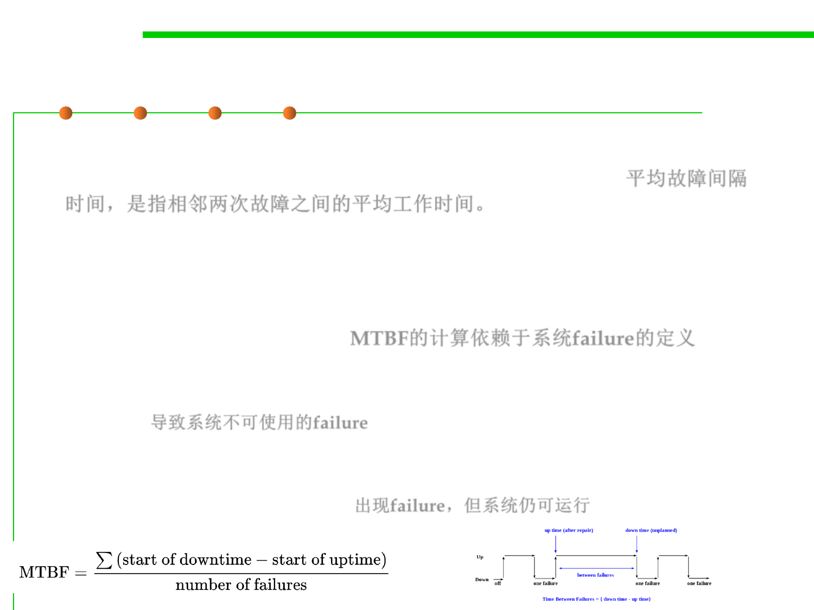

7.1 Robustness & Correctness
Mean time between failures (MTBF)
▪ Mean time between failures (MTBF) is the predicted elapsed time
between inherent failures of a system during operation. 平均故障间隔
时间，是指相邻两次故障之间的平均工作时间。
▪ MTBF is calculated as the arithmetic mean (average) time
between failures of a system.
▪ The definition of MTBF depends on the definition of what is
considered a system failure. MTBF的计算依赖于系统failure的定义
– For complex, repairable systems, failures are considered to be those out of
design conditions which place the system out of service and into a state for
repair. 导致系统不可使用的failure
– Failures which occur that can be left or maintained in an unrepaired
condition, and do not place the system out of service, are not considered
failures under this definition. 出现failure，但系统仍可运行